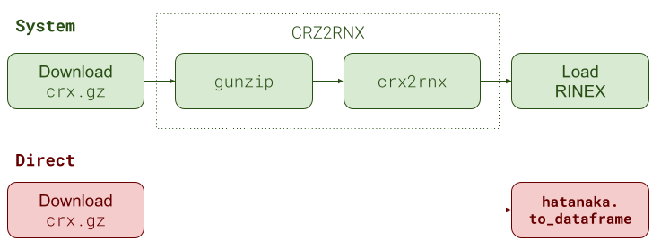
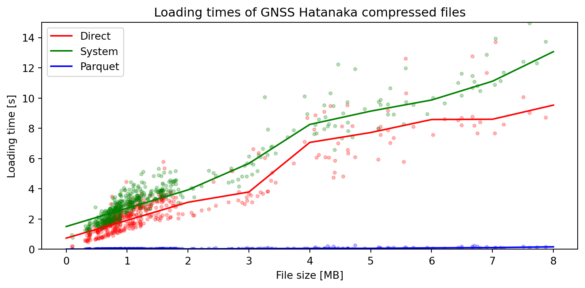

# The code makes use of the external roktools library, installed with the pip
# command
from roktools import hatanaka
# Use native integration using C-extension to directly load the data into a
# Dataframe. The function does not rely on calling external programs.
df = hatanaka.to_dataframe("ACSO00XXX_R_20241310000_05S_01S_MO.crx.gz")Data servers hosting GNSS data in RINEX format typically employ Hatanaka-gzip compression to optimize storage. This is becoming critical as networks and number of GNSS signals grow. While previous efforts have explored storing data in binary formats like Parquet, these formats cannot beat the compression achieved by the highly specialized Hatanaka + gzip combination (crx.gz files).
However, users of this data have to make sure that the hatanaka software is installed in their system. This requirement stems from the need for pre-processing, specifically converting the compressed files (crx.gz) to text RINEX files. This pre-processing typically involves the following steps::
- Download the
crx.gz(compressed Hatanaka + gzip) - Binary uncompression to obtain the
crxfile - Hatanaka uncompression using
crx2rnxto obtain the textrnxfile (Steps 2 and 3 can be merged if the user employs theCRZ2RNXscript, also provided in the Hatanaka software) - Load (parse) the RINEX text file into memory for processing

In programming languages like Python, these steps typically involve calling external tools using the subprocess library, essentially executing external programs. These programs often store their output in intermediate files, which are then consumed by subsequent processing steps. This multiple writing and parsing (text) files (first Hatanaka file and then uncompress RINEX format) to load it into memory for processinng significantly increases execution time.
To leverage existing GNSS data stored in crx.gz format while simplifying pre-processing (reducing dependencies) and accelerating loading times (by eliminating multiple file writes/reads), a refactoring of the Hatanaka software is proposed. This refactoring would facilitate the development of a C extension for Python, optimizing the entire pre-processing pipeline.
The main goal of this work is to deploy a software that:
- can be easily installed with a simple
pip installcommand and - eases the loading of a
crx.gzfile with a single function call (that does not rely under the hood with complexsubprocesssystem calls to external programs).
Something on those lines:
Refactoring the Hatanaka library
The Hatanaka library developed by Yuri Hatanaka is fundamentally two source files: the two main programs to compress and decompress RINEX files. Also, scripts that handle the gzip (binary) compression are also provided in the software.
To facilitate native integration with other programming languages (via C-extensions for Python or Rust), the core processing logic must be extracted from these main source files. Specifically, the refactoring focuses on the crx2rnx.c source file, as the primary interest lines in the uncompression stage. This involves isolating the core processing logic (the controller) from input/output operations based on fprintf and fgets methods (the “view”). This separation allows for code reuse with various application layers, such as Python scripts (or even other languages like Rust that support C-extensions), beyond the original C-executables (crx2rnx).
A key benefit of this approach is the potential to eliminate the need to write the uncompressed RINEX file to disk and then parse it again to load it into memory. Instead, the data can be extracted directly from the Hatanaka-compressed file and loaded into memory, thereby avoiding unnecessary file writes and reads. It’s important to note that binary uncompression will still be required, but Python provides built-in libraries to handle this efficiently.
Experimental feature
The hatanaka.to_dataframe feature is currently unavailable on roktools due to platform-dependent considerations. Deployment mechanisms are still under investigation.
For inquiries, create an issue to Github or visit GNSS R&D channel in X.
Performance
To assess the performance gains of the proposed approach, loading times using various strategies on files of different sizes have been measured.
Test data
The data used for this analysis cover:
Around 500 daily and hourly Hatanaka-gzip compressed files (
crx.gz) for January 1st, 2025, were obtained from the CDDIS server.Daily files contain samples every 30 seconds, while hourly files contain data every second (high rate). This ensures a variety of file sizes, ranging from 1 to 8 MB.
Loading strategies
Three approaches were evaluated for loading the files and measuring their associated loading times:
- Direct. This strategy utilizes the proposed refactoring for direct CRZ loading:
- Uncompress
gzfile and extract theCRX(Hatanaka compressed). This uses the Python built-ingziplibrary - Direct read of the
CRXfile into apandasdataframe.
- Uncompress
- System. This approach implements the standard processing pipeline mentioned earlier, involving two steps:
- Use system call to
CRZ2RNXto obtain the RINEX file - Load the Rinex using the
py-roktoolsrinex library
- Use system call to
- Pre-loaded Parquet: Assume that RINEX files have been pre-loaded and stored as
parquetformat, as proposed in a previous work. In this step, data is stored in binary format, therefore no parsing is needed: just a simple load of a parquet file (i.e. using the methodpandas.read_parquet).
Results
The following figure shows how the loading times compare between these methods. As expected, the direct method offers a much faster performance (a consistent 25% of improvement relative to the system approach) accross all file sizes.
Note that the parquet strategy cannot be directly compared to the direct and system strategies as it is an unfair comparison (i.e. no parsing of text file is performed). However it is provided for completeness, to illustrate the potential benefits of using a binary format to store the data.
Code
import pandas as pd
import matplotlib.pyplot as plt
df_direct = pd.read_parquet('direct_crxgz.parquet')
df_system = pd.read_parquet('system_call.parquet')
df_parquet = pd.read_parquet('parquet_load.parquet')
on = ['file', 'interval_s', 'filesize']
df = pd.merge(df_direct, df_system, how = 'inner', on = on, suffixes=('_direct', '_system'))
df = pd.merge(df, df_parquet, how = 'inner', on = on, suffixes=('', '_parquet'))
df['fs'] = (df['filesize'] / 1e6).round(0)
df_stats = df.groupby('fs')[['load_time_s_direct', 'load_time_s_system', 'load_time_s']].median().reset_index()
fig, ax = plt.subplots(figsize=(8, 4))
ax.set_title('Loading times of GNSS Hatanaka compressed files')
ax.plot(df_direct['filesize'] / 1.0e6, df_direct['load_time_s'], '.r', alpha=0.25, label="")
ax.plot(df_system['filesize'] / 1.0e6, df_system['load_time_s'], '.g', alpha=0.25, label="")
ax.plot(df_parquet['filesize'] / 1.0e6, df_parquet['load_time_s'], '.b', alpha=0.25, label="")
ax.plot(df_stats['fs'], df_stats['load_time_s_direct'], '-r', label='Direct')
ax.plot(df_stats['fs'], df_stats['load_time_s_system'], '-g', label='System')
ax.plot(df_stats['fs'], df_stats['load_time_s'], '-b', label='Parquet')
ax.set_ylim(0,15)
ax.set_xlabel('File size [MB]')
ax.set_ylabel('Loading time [s]')
ax.legend(loc='upper left')
plt.tight_layout()
plt.show()
For a more quantitative evaluation, the loading times (in seconds) for each of the strategies and for the various file sizes are collated in the following table
Code
from IPython.display import Markdown
df2 = df_stats.round(2)
df2 = df2.rename(columns={'fs': 'File Size [MB]', 'load_time_s_direct': 'Direct', 'load_time_s_system': 'System', 'load_time_s': 'Parquet'})
Markdown(df2.to_markdown(headers='keys', numalign="center", index=False))| File Size [MB] | Direct | System | Parquet |
|---|---|---|---|
| 0 | 0.74 | 1.51 | 0.01 |
| 1 | 1.92 | 2.72 | 0.02 |
| 2 | 3.11 | 3.93 | 0.03 |
| 3 | 3.79 | 5.68 | 0.04 |
| 4 | 7.07 | 8.26 | 0.06 |
| 5 | 7.72 | 9.14 | 0.06 |
| 6 | 8.58 | 9.87 | 0.09 |
| 7 | 8.6 | 11.12 | 0.11 |
| 8 | 9.54 | 13.07 | 0.16 |
Conclusions
This post introduces a pre-processing pipeline for Hatanaka + gzip compressed files based on native integration directly with scripting languages like Python. This approach eliminates the need for external tools, significantly reducing processing time. This improvement is particularly beneficial for applications that handle large volumes of GNSS data, such as precise orbit and clock calculations.
Results obtained with the process of almost 500 files with different size show a consistent speedup when using this native implementation by about 25 % relative to relying on external system calls. The loading speed can be even dramatically increase when using binary format such as parquet, that offer a tenfold improvement in the loading time.
While this approach offers significant advantages, there is still room for optimization. The current implementation leverages the original Hatanaka library, which generates intermediate strings that are subsequently parsed into floating-point numbers using the C atof method. Future improvements could involve eliminating these intermediate strings and directly computing the floating-point values from the CRX file.
Acknowledgements
The author would like to extend his gratitude to the Crustal Deformation Data Information System for the GNSS data used in this work.
Use of AI
This text has been enhanced using Artificial Intelligence to refine its style and correct typos. The author was responsible for all stages of the process, including ideation, coding, data processing, initial text drafting, and review of the AI’s contributions.